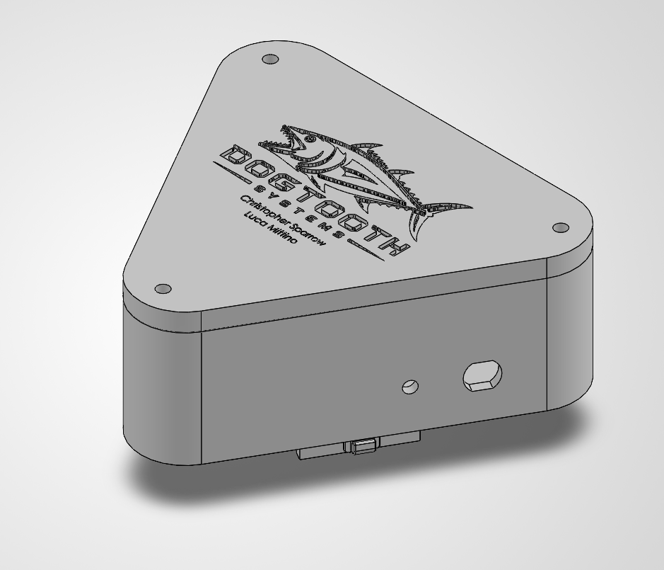
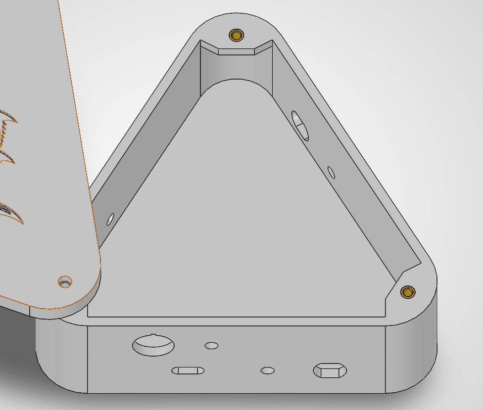
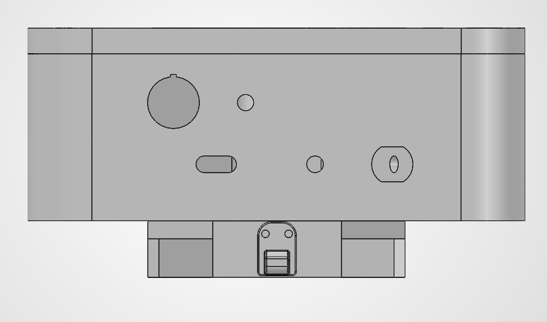
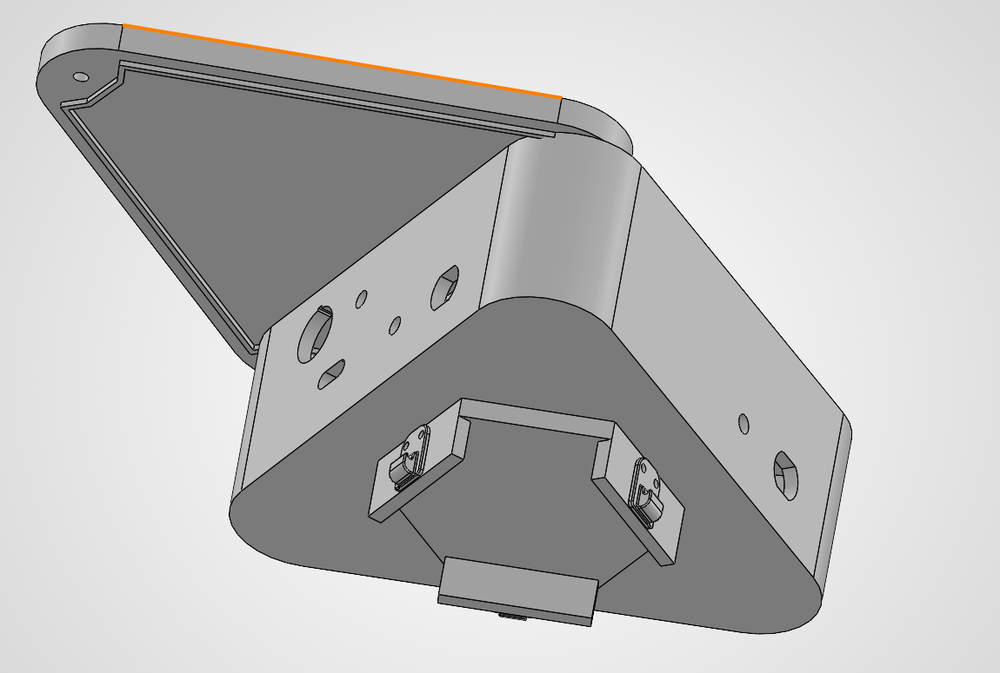

On the desk · Work in progress
Dogtooth
Manta’s three antennas share a tripod, so their mounts and the electronics enclosure have to fit on the same frame. As Mechanical Lead, I’m laying out that assembly. My current focus is the enclosure at its center and how it attaches to the frame.
- My role
- Mechanical Lead
- Project stage
- Concept development

Basic shapes show the system arrangement. Geometry and proportions are provisional.
Mechanical development
The directional antenna needs room to turn and tilt. The other two antennas stand upright. The model shows how those different mounting needs fit around the central housing.
Current focus
I’m using the enclosure CAD to work through how the electronics fit under the lid, where connections pass through the walls, and how the underside meets the mount. The next check is the fit between those parts on a physical prototype.
Current enclosure study
Scroll through the images or use the controls.




Mechanical Lead: Luca Mittino. System concept and electronics: Christopher Sparrow.